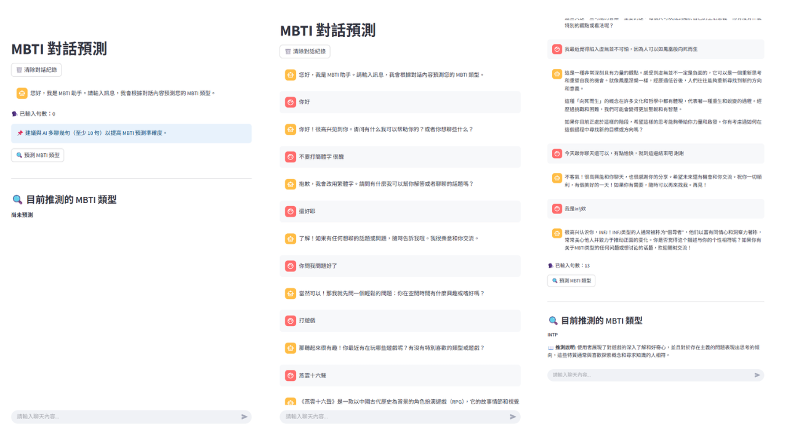
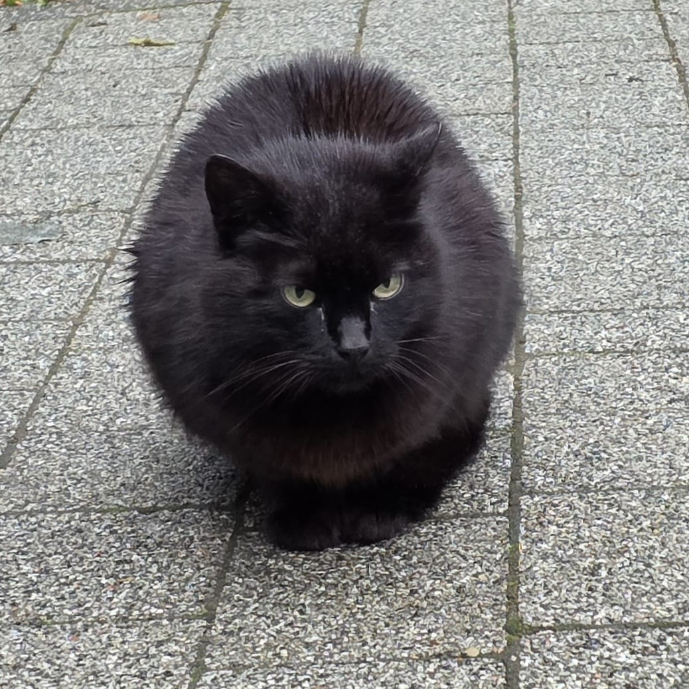

> PLEASE_SELECT_A_NODE_TO_OBSERVE_
PROJECTS_ 系統專案模組
台灣產業就業分析與觀測面板
進行相關資料收集及數據清理，並製作成可互動的動態儀表板。
> CONNECTING_TO_SERVER...
Hover to Initialize Data_
AI聊天人格測驗系統設計
以VibeCoding的AI技術為基礎，開發能以自然語言互動的聊天機器人，用於測試和評估不同的人格特質。

ARTICLES_ 截獲文本
[ 請選擇欲載入之檔案 ]
ALBUMS_ 空間影像紀錄
STATUS: WAITING_FOR_SYNC...
ABOUT ME_ 實體觀測與參數設定檔

王培安 / Mikey
CLASS: LANGUAGE & Literature // DATA_ANALYSIS
LEVEL (AGE)
Lv. 22
HP (ENERGY)
MAX
MP (CREATIVE)
85%
LOCATION
臺北/ 宜蘭 / 波蘭 UWM
Power BI & 資料視覺化Lv. 85
SQL & Python 數據分析Lv. 75
英語能力 (TOEIC 805)Lv. 80
網頁前端應用 (HTML/CSS/JS)Lv. 70
文書軟體應用 (Word/Excel/PowerPoint)Lv. 85
[ EDUCATION // 教育背景 ]
臺灣 國立宜蘭大學 (NIU)
2022/09 - 修讀中 // Yilan
外國語文學系
⼤數據管理與應⽤學士學位學程
[ WORK_LOG // 工作經歷 ]
高中英文家教
2025/04 - 2025/09
協助學生維持課業並進行英語教學，將語文邏輯結構化解構。
華文課 TA (教學助理)
2024 - 2025 // 國立宜蘭大學
輔導外籍學生練習中文口說，設計教學活動引導跨語系表達。
BUN BUN 棒棒 兼職人員
2023/12 - 2024/02
協助內外場備料、出餐與點餐清潔，高壓環境下的反應能力訓練。
7-11便利商店 兼職人員
2022/06 - 2026/02
收銀與商品上架，適應標準化商業系統，習得各階層顧客溝通。
全家便利商店 兼職人員
2022/06 - 2026/02
收銀與商品上架，適應標準化商業系統，習得各階層顧客溝通。
[ MISSION_REWARDS // 競賽與獎項 ]
宜大人管院113年 ESG 永續發展專題競賽
ESG永續發展組 - 第一名
主導小組資料視覺化，負責開發「蘭陽窯 ESG 視覺化監控系統」操作版面，優化企業數據監控。
國立宜蘭大學114年 宜大AI GO~ AI黑客松實作培訓暨競賽
小組第一名
和組員應用課程知識，利用生成式AI進行學校宣傳片製作，主要負責配音生成及影片剪輯
[ EXT_ACTIVITIES // 課外活動 ]
國際交流摩賽克志工
CHRONO: 2022
引導校內學生與外籍教師進行文化交流，實戰演練英語口說與雙向口譯能力。
私立金山社區復健中心志工
CHRONO: 2022
帶領中心學員進行創意活動與健康觀測，深入理解思覺失調症等精神光譜實體，習得深度同理溝通。
[ LOCATION_SHIFT // 時空轉移 ]
波蘭 瓦爾米亞馬祖里大學 (UWM)
2026/02 - 2026/06 // Olsztyn
地理座標移轉至波蘭。進行跨文化的異地獨立學術觀測，解鎖跨地理解構的思維模式。
System Command Prompt V1.0
> 正在建立安全連線...
> 通訊協定已就緒。
> EMAIL: angela101699@gmail.com
> GITHUB: github.com/PhiAmour16
> 期待您的訊號
> 通訊協定已就緒。
> EMAIL: angela101699@gmail.com
> GITHUB: github.com/PhiAmour16
> 期待您的訊號